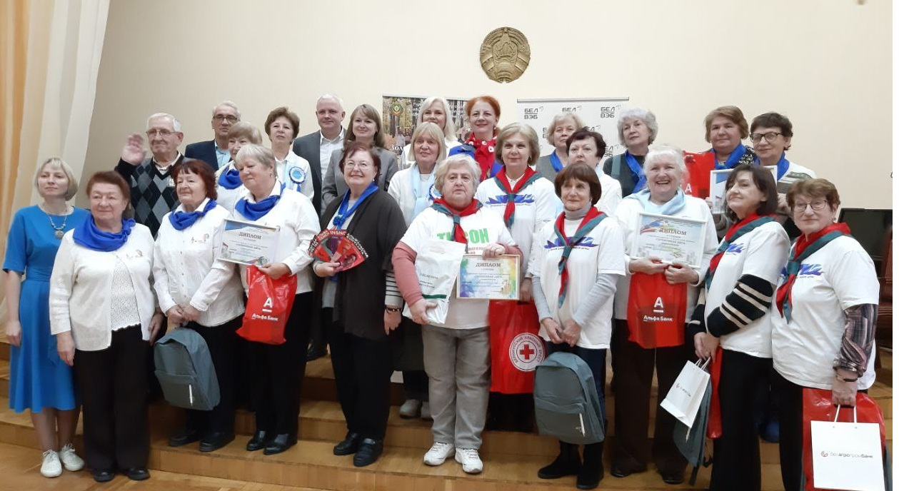

ул. 50 лет БССР 19, Гомель
ул. 50 лет БССР 19, Гомель
Контактная информация
Здесь вы найдете адрес, телефоны и график работы центра. Перед визитом рекомендуем уточнить информацию по телефону.

Перед визитом вы можете ознакомиться с адресом и графиком работы центра, чтобы спланировать удобное время обращения.
Основные данные
- Полное наименование: Территориальный центр социального обслуживания населения Железнодорожного района г. Гомеля
- Адрес:Адрес: ул. 50 лет БССР 19, Гомель, Гомельская область, Беларусь
- Телефон приёмной: +375 (232) 21-09-46
- E-mail: officer@tcsonrw_gomel.by
График работы
- Понедельник–пятница: 8:30–13:00, 14:00–17:30
- Перерыв: 13:00–14:00
- Суббота, воскресенье: выходной
Приём граждан
Приём граждан по личным вопросам осуществляется в соответствии с установленным графиком. Рекомендуем заранее записаться по телефону.
Обратная связь по работе сайта
Если вы заметили неточность в информации на сайте или у вас есть предложения по его улучшению, вы можете сообщить об этом ответственному сотруднику центра.
- по телефону приёмной;
- по электронной почте с пометкой «Сайт центра»;
- лично, обратившись к администрации.